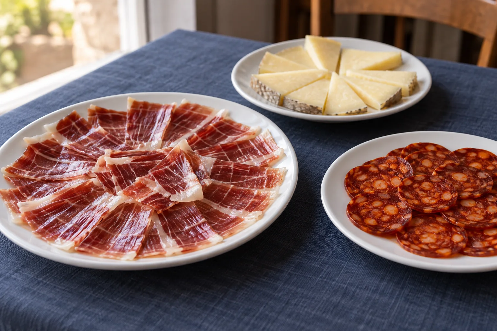
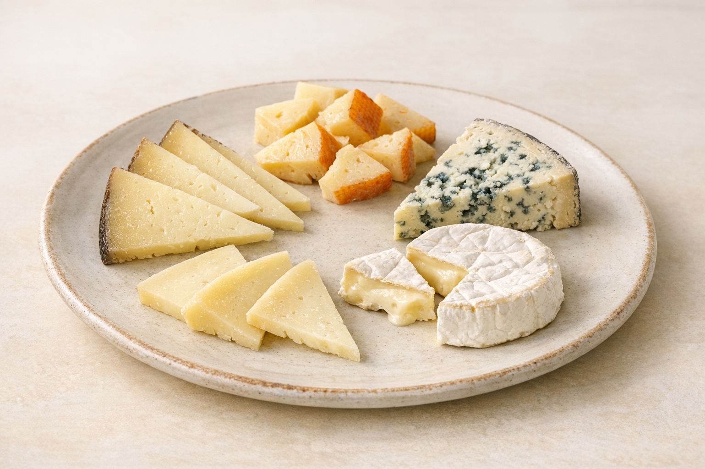

01
Ibéricos y mucho más
Servicio de pan: 1,20 € por persona. Extra de AOVE: 1 € por persona. Mantequilla artesana: 3,50 €.
Chorizo Ibérico Bellota
Media7.90 €Ración13.90 €Salchichón Ibérico Bellota
Media7.90 €Ración13.90 €Lomito Ibérico Bellota
Media11.90 €Ración17.90 €Variado de Ibéricos Especial
29.50 €Chicharrón de Cádiz
8.90 €Sobrasada Mallorquina con miel
9.50 €
02
Para l@s queser@s
Servicio de pan: 1,20 € por persona. Extra de AOVE: 1 € por persona. Mantequilla artesana: 3,50 €.
Quesos curados
Media9.90 €Ración15.50 €Selección Quesos especiales
Media12.90 €Ración17.90 €Miniretorta del Casar
12.00 €